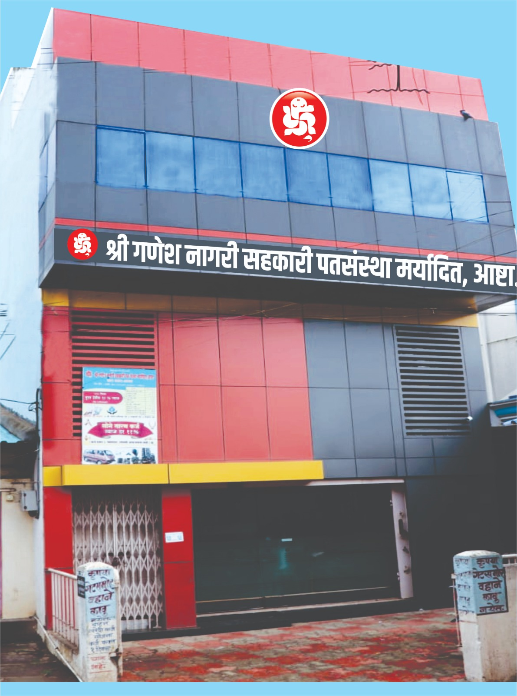

श्री गणेश नागरी सहकारी पत संस्थेची स्थापना जरी दिनांक 6 सप्टेंबर 1975 साली गणेश चतूर्थीच्या शुभ मुहर्तावर झाली असली तरी त्यापुर्वी 1970 साली आपली संस्था उदयाला आली होती असे म्हणणे वावगे ठरणार नाही कारण 1970 साली श्री गणेश भिशी या नावाने हीच संस्था कार्यरत होती.या भिशीच्या स्थापनेत संस्थेचे संस्थापक श्री प्रभाकर गोविंद तळवलकर कै.अच्युतराव गोपाळराव मळणगांवकर कै.वसंत बोधे कै.भगवंतराव गायकवाड अशी मंडळ होती.1975 साली आपल्या देशाच्या माजी पंतप्रधान कै.श्रीमती इंदिराजी गांधी यांनी देशात आणिबाणी जाहीर केली व खाजगी सावकारी व भिशी वैगेरे बंद करणेचा फतवा काढला.परंतु सामाजीक हितासाठी कार्य करणेच्या हेतुने प्रेरीत झालेले संस्थेचे माजी संचालक श्री.प्रभाकर गोविंद तळवलकर कै.अच्युतराव गोपाळराव मळणगांवकर कै.वसंत बोधे कै.भगवंतराव गायकवाड कै.होमकर सर कै.सुभाषचंद्र झंवर श्री.धनपाल चौगुले इ.एकत्र येवून श्री गणेश चतुर्थीच्या शुभ मुहर्तावर 6 सप्टेंबर 1975 रोजी करणेत आली. सुरवातीला संस्थेचे कामकाज तळवलकर वाडयात चालू करणेत आले.त्यावेळ कै.नानासो यांनी तळवलकर वाडयातील जागा विनामोबदला संस्थेस दिली.नुसती दिली नाही तर फर्निचरही संस्थेस दिले.सुरवातीस संस्थेची सभासद संख्या 230 भाग भांडवल रू. 10000 ठेवी रू.एक लाख इतक्या होत्या.संस्थेचे कामकाज कै. आर. डी.आरबोळेसो यांचे मार्गदर्शना खाली चालू झाले.
मा. संचालक मंडळतील सदस्यांवरील विश्वासाने संस्थेच्या रोपटयास बाळसे येवू लागले.जागा अपूरी पडू लागलेने संस्थेचे स्थलांतर भाजी मंडईत अनिल महाजन यांचे माडीवरती करणेत आले.संस्था भर चौकात आलेने तिची घोडदौड अगदी जोमाने चालु झाली1982 साली संस्थेने वसंतराव महाजन यांची जागा खरेदी करून 1987 साली बांधकाम पुर्ण झाले. तदनंतर संस्थेच्या ठेवी व कर्जात प्रचंड वाढ झाली.सांगली येथील काही सभासद सांगली यथे शाखा काढणे विषयी आलेल्या मागण्यांचा विचार करून पहीली शाखा पेठभाग सांगली येथे दिनांक 2.2.1990 रोजी सांगलीचे आराध्य दैवत श्री गणेशाच्या छत्रछायेखाली करणेत आली.संस्थेच्या रोपटयाचे वॄक्षात रूपांतर होवू लागले.संस्थेकडे ठेवीचा ओघ वाढू लागलेने दुसरी शाखा बावची या ठिकाणी दि.17.10.1992 रोजी काढणेत
आली.याही ठिकाणी संस्थेची स्वमालकीची भव्य वास्तु आहे.तिसरी शाखा आरग हया दुष्काळी भागात दिनांक 14.10.1994 रोजी काढणेत आली.हि शाखाही उत्तम प्रकारे चालली असुन याठिकाणीही संस्थेची स्वमालकीची भव्यवास्तु आहे.त्यानंतर 4 थी शाखा तांदूळावाडी या खेडयात दिनांक 12.11.2001 रोजी काढणेत आली.या शाखेनेहीे नेत्रदिपक प्रगती केली आहे. याठिकाणीही संस्थेची स्वमालकीची भव्यवास्तु आहे. तदनंतर संस्थेची 5 वी शाखा रामानंदनगर येथे दिनांक 15.2.2002 रोजी काढणेत आली. याठिकाणीही संस्थेची स्वमालकीची भव्यवास्तु आहे. या नंतर संस्थेची 6 वी शाखा पेठवडगांव जि.कोल्हापूर येथे दि.14.8.2014 रोजी सुरू केली या शाखेकरीता स्वमालकीची तयार नवीन इमारत खरेदी करून ऑफिस कामकाज सुरू केले आहे. त्यानंतर संस्थेची 7
वी शाखा पलूस येथे दि.22.10.2015रोजी सुरू करणेत आली या शाखेसाठी जागा खरेदी केली आहे लवकरच स्वमालकीची इमारत होईल तसेच 8वी शाखा हेरले येथे दि.17.12.2018 रोजी सुरू केली त्याचप्रामाणे 9वी शाखा डॉ .बाबासाहेब आंबेडकर रोड साठे काँप्लेक्स आष्टा येथे दि.6.9.2019 रोजी सुरू झाली.संस्थेची 10 वी शाखा मिरज येथे दि.01.03.2023 रोजी सुरू झाली .मुख्य शाखा आष्टा सह एकुण 11 शाखांसह संस्थेचे कामकाज सुरू आहे. संस्थेच्या 11 शाखांपैकी 8 शाखा स्वमालकीच्या इमारतीमध्ये कार्यरत असून उर्वरीत 3 शाखांना सुध्दा स्वमालकीच्या इमारती उभी करणेचा मा.संचालक मंडळाचा मानस आहे.
संचालक मंडळात सर्व जाती धर्माचे संचालक तसेच सेवक वर्ग आहे.हि आपली संस्था राजकारण विरहीत आहे.यावरून श्री संत शिरोमणी ज्ञानेश्वर माऊली यांच्या उक्ती प्रमाणे इवलेसे रोपटे लावयिले दारी त्याचा वेलू गेला गगनावरी याची प्रचीती येते. संस्थेने आपला रौप्य मोहत्सव दिनांक 6 सप्टेंबर 2000 रोजी साजरा केला असुन यानिमीत्त सभासदांना रू.100 चा बोनस शेअर्स दिला.शिवाय 20 टक्के डिव्हीडंड देणेत आला होता.तसेच सेवकांना 25 टक्के बोनस देणेत आला होता.संस्थेने सभासदांसाठी संस्थेला 41 वर्ष पुर्ण झाल्याचे औचित्य साधून भेटवस्तू म्हणून प्रत्येक सभासदास रू.800 किंमतीची खुर्ची दिली आहे तसेच सामाजीक बांधीलकी म्हणुन संस्था दरवर्षी आश्रमशाळेतील विद्यार्थ्यांना शाळेचे ड्रेस देणेत येतात.महापूरावेळी पूरग्रस्त लोकांकरीता एक हजार लोकांची जेवणाची सोय केली होती त्याचप्रामाणे आष्टा नगर परिषद आष्टा यांच्या आव्हानास प्रतिसाद म्हणून कोव्हीड 19 च्या लोकडाऊन काळात गरीब लोकांकरीता संस्थेने 100 कि.तुरडाळ दिली असून मुख्यमंत्री सहाय्यता निधी कोव्हीड 19 करीता रू.एक लाखाची भरीव आर्थिक मदत दिली आहे तसेच परीवर्तना बरोबर संस्थेने बदलाची भुमीका ठेवलेने सन 1998 पासून संस्थेचे कामकाज संगणकावर चालू आहे.